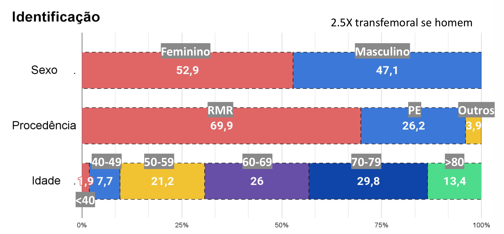
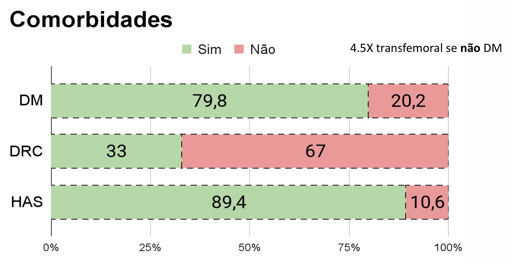
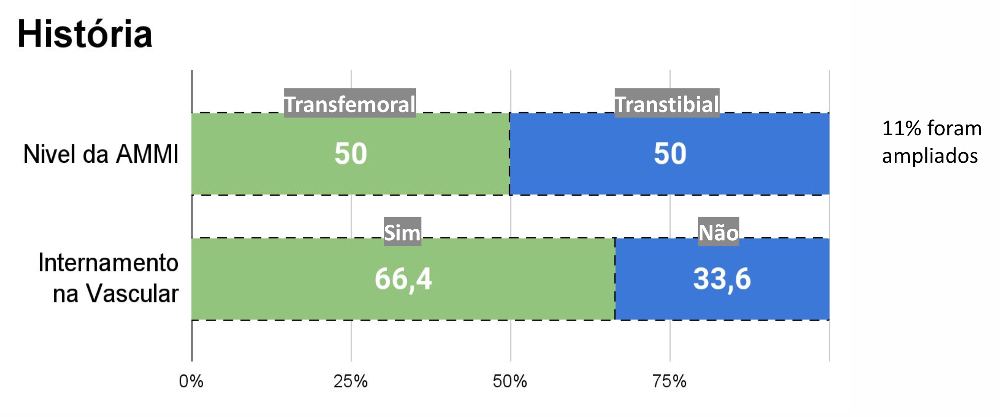
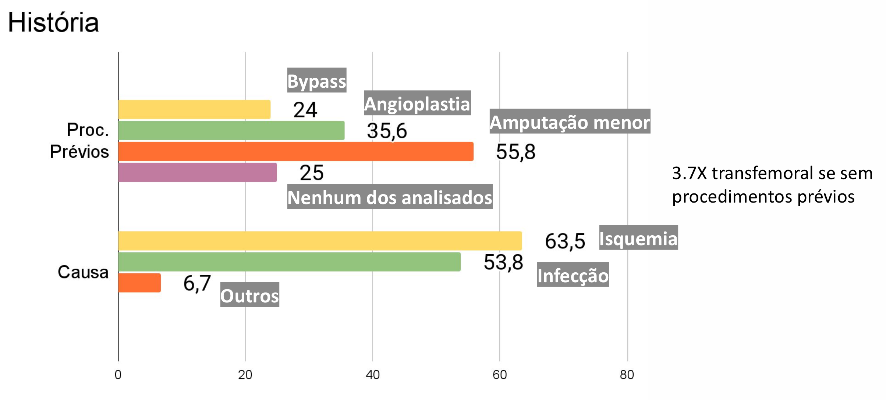

DIABETES MELLITUS EM PACIENTES SUBMETIDOS À AMPUTAÇÃO
O Diabetes mellitus (DM) é uma doença crônica de alta prevalência e envolvida em uma grande parcela das amputações maiores de membros inferiores (AMMI), representando grave problema de saúde pública.
Com base nesse dado fizemos um estudo observacional, transversal e retrospectivo usando prontuários médicos de 104 pacientes submetidos à AMMI no período de novembro de 2011 a dezembro de 2015.
Objetivando assim analisar a incidencia dessa abordagem no Serviço de Cirurgia Vascular do Instituto de Medicina Integral Professor Fernando Figueira - IMIP.
MATERIAL E MÉTODOS
Trata-se de estudo observacional, transversal e retrospectivo realizado a partir da revisão dos prontuários de pacientes submetidos à amputação maior dos membros inferiores (AMMI) pelo Serviço de Cirurgia Vascular do Instituto de Medicina Integral Professor Fernando Figueira (IMIP) no período entre novembro de 2011 e dezembro de 2015.
A população de estudo correspondeu a todos os pacientes que realizaram AMMI pelo Serviço de Cirurgia Vascular no período supracitado, totalizando 114 pacientes, dos quais, mediante aplicação dos critérios de exclusão - casos em que no prontuário do paciente haja falta de informações relevantes -, foram considerados válidos para o estudo 104 pacientes, isto é, 91,2% da população submetida à AMMI no período estudado.
A coleta das informações foi realizada a partir do resgate dos prontuários dos pacientes arquivados no Serviço de Arquivo Médico e Estatística (SAME) do IMIP. As variáveis observadas incluíram a idade, sexo, procedência, nível de amputação (transfemoral ou transtibial), presença de diabetes mellitus, hipertensão arterial e doença renal crônica, causa da amputação (isquemia, infecção ou outras), existência de cirurgias prévias de amputação menor e de revascularização (bypass ou angioplastia) e a necessidade de nova abordagem cirúrgica para ampliação da amputação. Nos casos de pacientes com mais de uma amputação maior, foram coletados os dados referentes à primeira delas.
DADOS PERCEBIDOS
Dos 104 pacientes estudados, 55 (53%) eram do sexo feminino, 72 (70%) eram procedentes da Região Metropolitana do Recife, 27 (26%) de outras cidades do estado de Pernambuco e 4 (4%) de outros estados.
A média da idade dos pacientes foi de 65,6 anos, enquanto a mediana foi de 68 anos. A idade mínima observada foi de 8 anos e a máxima de 90 anos. A faixa etária mais frequente foi a de 70 a 79 anos, com 31 pacientes (30%), sendo seguida pela faixa de 60 a 69, com 27 indivíduos (26%).
Dos pacientes estudados, 83 (80%) eram diabéticos e 93 (89%) tinham HAS. Pacientes com doença renal crônica eram 35 (33%), dos quais 11 (11%) faziam hemodiálise e 8 (8%) receberam transplante renal.
Quanto à causa da amputação, observou-se que isquemia estava presente em 66 (63%) casos, infecção em 56 (54%) e “outras causas” em 7 casos (7%). Encontrou-se que complicações de infecção e rotura de enxerto decorrentes de revascularizações foram responsáveis pela AMMI de 5 pacientes.
Levando-se em consideração a primeira amputação maior nos casos de pacientes com mais de uma AMMI, foi observada a mesma frequência de amputação em nível transtibial e transfemoral, totalizando 52 (50%) casos cada. Foi necessária nova abordagem cirúrgica de ampliação da amputação para 12 (11%) pacientes.
No que se refere à existência de cirurgias prévias – avaliando-se apenas amputações menores, angioplastia ou bypass para salvar o membro doente, observou-se que 26 (25%) pacientes não foram submetidos a qualquer um desses procedimentos antes da AMMI. Havia registro de amputação menor prévia nos prontuários de 58 (56%) pacientes, de angioplastia em 37 (36%) e de bypass em 25 (24%).
DISCUSSAO DOS RESULTADOS
A casuística encontrada nesta pesquisa apresenta dados semelhantes a outros estudos nacionais no que se refere à idade média dos doentes amputados. Todavia, apresenta uma diferença significativa em relação a estudos estrangeiros, os quais apresentam uma idade média dos pacientes submetidos à AMMI consideravelmente superior. A diferença em comento pode ser atribuída às diferenças socioeconômicas, notadamente à facilidade de acesso e à qualidade da assistência médica oferecida em países desenvolvidos.
O maior número de pacientes do sexo feminino (53%), ainda que discreto, diverge de outros estudos, os quais revelam um predomínio de pacientes do sexo masculino dentre os amputados9,13. Ademais, não houve diferença significativa na média de idade de cada sexo (65,3 para homens e 65,8 para mulheres), divergindo desses estudos que também encontraram idade média menor para os homens. Todavia, análise estatística pelo método Stepwise demonstrou que os homens possuem duas vezes e meia mais chances de sofrer uma AMMI de nível mais proximal do que as mulheres.
Foi encontrada uma razão de AMMI acima do joelho/abaixo do joelho de 1:1, proporção inferior à encontrada por Spichler et al, que observou razão de 2,5:1
A frequência extremamente elevada de diabetes mellitus dentre os pacientes amputados (80%) revela-se bem superior ao encontrado em outros estudos, como o de Leite et al, que identificou DM em 42.6% dos pacientes submetidos à AMMI, e o de Vamos et al, com 43,7% de diabéticos. O achado em comento reafirma a relevância da doença nos eventos que levam à AMMI. Em razão das limitações do método de estudo, não foi possível obter dados quanto ao tempo de diagnóstico do DM, tratamento utilizado e controle de índices glicêmicos, fatores que sabidamente repercutem na necessidade de amputação. Alarmante, ainda, a presença de HAS em 89% dos pacientes estudados.
Foi encontrada uma alta frequência de pacientes revascularizados (48%), dado paradoxalmente melhor do que o encontrado em estudo francês feito por Fosse et al, no qual apenas 33% dos doentes foi submetido a revascularização17. Este dado se revela de grande importância, uma vez que está essencialmente relacionado com a facilidade e rapidez do acesso aos serviços especializados.
Importa observar que a demora em receber atendimento adequado, porém, ainda predomina em nosso meio, de modo que significativa parte dos doentes só são encaminhados para o serviço de cirurgia vascular quando há irreversível deterioração do quadro clínico, e a amputação em níveis mais proximais é a única alternativa disponível. Com efeito, observou-se que em 25% dos casos, a AMMI não foi precedida de qualquer amputação menor ou tentativa de revascularização, o que pode ser devido ao atendimento tardio e o consequente agravamento da saúde do paciente, não sendo mais possível optar por uma abordagem mais conservadora. Importante ainda destacar que há um possível viés, uma vez que nem sempre os procedimentos prévios, principalmente se realizados em outros serviços, eram devidamente registrados nos prontuários. Assim, é possível que haja um superdimensionamento dos pacientes com AMMI primária.